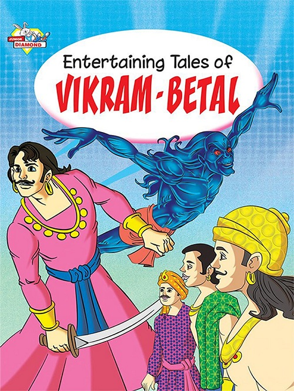

|
Matter of SuccessionSuccessor is not only by relationship establishedVaitaal said - "Now the time is very short, let me tell you one another story, may be the last one." Vikram said - "So you will complete 25 stories." "Yes, And these stories will be famous as "Vaitaal Pachcheesee". How much good I have done by telling you these stories, only the Time will tell. So listen to it attentively. There were two young men, Madan and Ratan, in Baatee island. Both were very fast friends. Once both went to do business together. They made a lot of profit. While returning, they sat down under a tree and started counting their remaining things and profit. They were busy in their work, that a beautiful woman came there. Both looked at her surprisingly and asked her - "O Beautiful, Who are you?" She told the she was going with her husband that some robbers robbed them and killed her husband. After saying this she broke into tears and started crying loudly. She said - "Since now there is nobody for me to go - there was no use to go to my parents and other relations, I will commit suicide." Madan and Ratan consoled her and assured her to provide every kind of help she needed. Woman got consoled. Their work was over so they took her along and started their journey. Both were thinking about her, as what to do of her. Madan suggested that she should be remarried. Ratan said - "Maybe one of us can marry her." "But how?" Ratan said - "If you are interested, you may marry her." Madan said - "Yes, I can marry, but if you want, you can marry her." Madan again said - "Look, We both are interested to marry her. So, let us play the dice game and decide who will marry her. Then we will not have any complaint with each other." Ratan agreed. Then both sat again under a tree, and played dice game for a long time. In the end, the match was drawn. They again started playing, but again the match was drawn. They did this several times, but nobody won the game, nobody lost the game. So they were unable to decide what to do. Then they asked her - "To whom you want to marry." She shyly told that she could marry both of them, because she liked both of them. Now they were in real trouble. That woman was still with them. In the end they thought to pick the paper. They wrote their names on two papers and picked one. It was Madan's name, so Madan married her. Vikram, see the Time, after a child was born to them, Madan died in an accident. The woman asked Madan's share of wealth from Ratan. Although Madan had no partnership with Ratan, still she asked his share from Ratan. Now tell Vikram, how far her demand was lawful? Vikram said - "The matter must have gone to the royal court." Vaitaal said - "Yes, And I know the judgment also. The king refused her claim, but what is you judgment?" Vikram smiled - "My judgment? My judgment is that she should get it." "Why?" Vikram said - "It was true that Madan had won her by toss, but still she was the property of both of them. She had the right of succession." Vaitaal said - "You are right, Vikram." He again laughed loudly. As Vaitaal lughed loudly Vikram became careful and he held him tightly, because now his destination was very near. Vaitaal said - "Don't worry, I will not run away now. I am with you." But Vikram didn't trust him so he held him tightly. |
 |
| Previous | Index | Next |